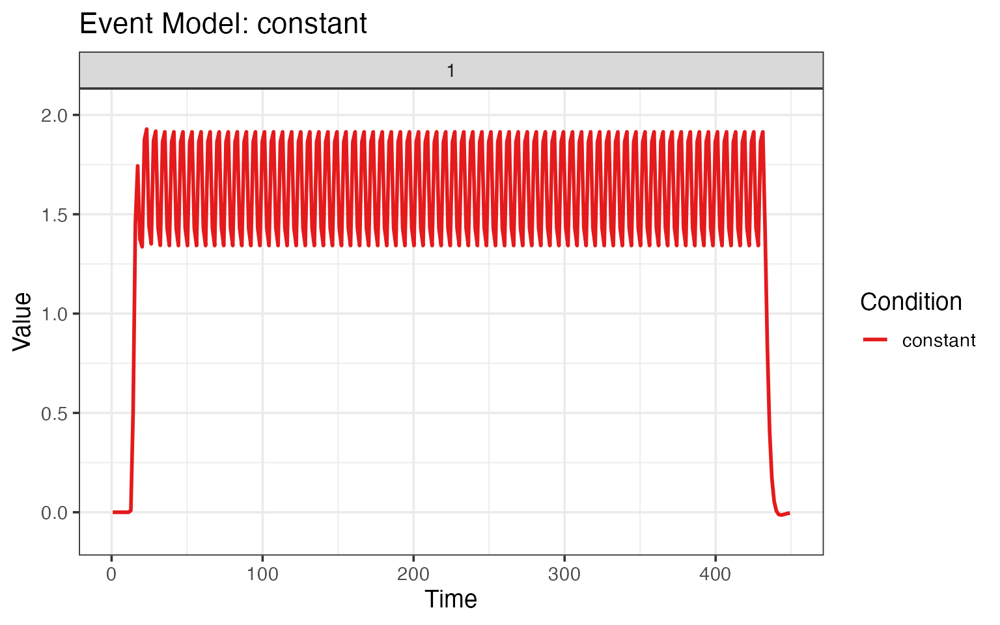

Single Trial Beta Estimation
Bradley R. Buchsbaum
2023-05-09
Source:vignettes/a_07_trialwise.Rmd
a_07_trialwise.RmdEstimating single-trial event amplitudes for use in “beta series” analyses and MVPA analyses.
It is common in fMRI analysis want to obtain estimates of BOLD
amplitude for each trial (rather than condition) in an
experiment. Estimation of single-trial beta coefficients can be done in
fmrireg with the estimate_betas function.
First we load in an experimental design.
library(dplyr)
library(fmrireg)
facedes <- read.table(system.file("extdata", "face_design.txt", package = "fmrireg"), header=TRUE) %>% filter(run == 1)
## we had a constant value to the design used later to model the mean stimulus response over all trials.
facedes$constant <- factor(rep(1, nrow(facedes)))Now we generate an fMRI data using random values.
D <- 5
scans <- lapply(1:length(unique(facedes$run)), function(i) {
arr <- array(rnorm(D*D*D*300), c(D,D,D, 300))
bspace <- neuroim2::NeuroSpace(dim=c(D,D,D,300))
neuroim2::NeuroVec(arr, bspace)
})
mask <- neuroim2::LogicalNeuroVol(array(rnorm(D*D*D), c(D,D,D)) > 0, neuroim2::NeuroSpace(dim=c(D,D,D)))Now we create a instance of type fmri_mem_dataset which
encapsulates infromation about the data, temporal layout, and
experimental design of an “in memory” fmri dataset.
dset <- fmri_mem_dataset(scans=scans,
mask=mask,
TR=1.5,
event_table=facedes)Now we’re ready to run the beta estimation analysis. There are two
components to the model: a fixed effects formula and a random effects
formula. The fixed effects part models the condition-specific responses,
and the random effects part models the trial-specific responses. For the
random effect part, we want to model every onset separately, so we use
the trialwise hrf modeling function. For the fixed part, we
use a standard hrf modeling function.
The method we use is “pls” for partial least squares
(via the pls package), which effectively acts as a
regularized least squares estimation procedure. Simulations show that
pls produces trialwise beta estimates for closely space
onsets (e.g. overlapping hrfs) that are similar to the “least squares
sum” approach (citation needed). By modeling the mean effect with
fixed = onset ~ hrf(constant) the “random effects”
onset ~ trialwise() capture the deviations from that mean,
with regularization achieved by using partial least squares estimation
with a small number of components (here, n=3). Other fixed effects can
also be modeled, and could include events of no interest that should be
covaried out when estimating the beta coefficients of interest.
When the onsets are not closely space together, ordinary least squares using the “ols” method is appropriate. For method “ols”, however, a constant fixed effect should not be used, since it is a linear combination of the random effects, so we omit the “fixed” term.
res <- fmrireg:::estimate_betas(dset, fixed = onset ~ hrf(constant), ran = onset ~ trialwise(), block = ~ run,
method="pls", ncomp=3)## [1] "onset" "hrf(constant)"
## [1] "onset" "trialwise()"
names(res)## [1] "betas_fixed" "betas_ran" "design_ran" "design_fixed" "design_base"
## [6] "basemod" "fixed_model" "ran_model"
res_ols <- fmrireg:::estimate_betas(dset, ran = onset ~ trialwise(), block = ~ run,
method="ols", ncomp=3)## [1] "onset" "trialwise()"We can plot the fixed effects model, which here is a single regressor.
plot(res$fixed_model)
We can also plot the random effects model, where there is one regressor per trial.
plot(res$ran_model)